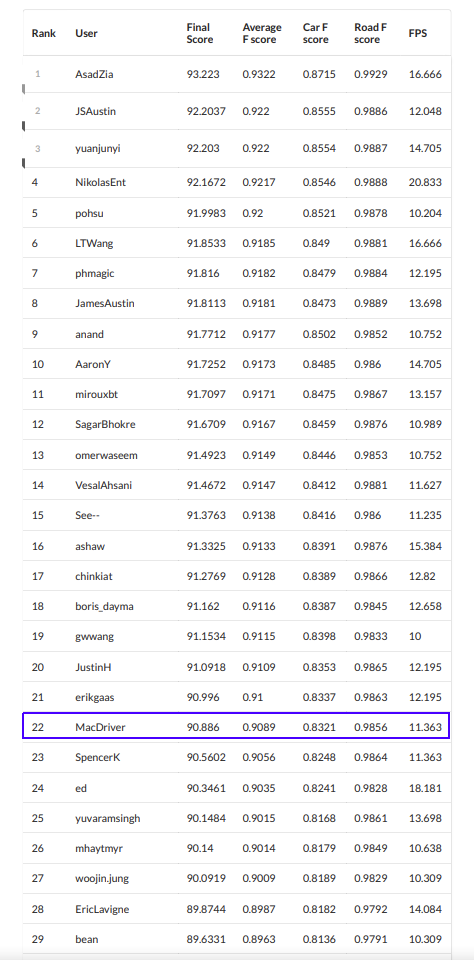
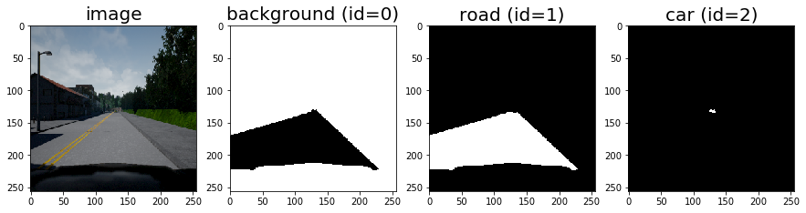
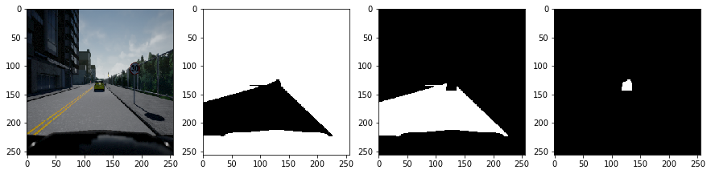
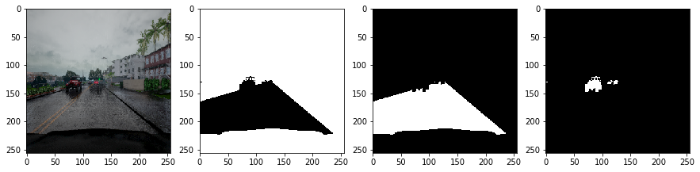
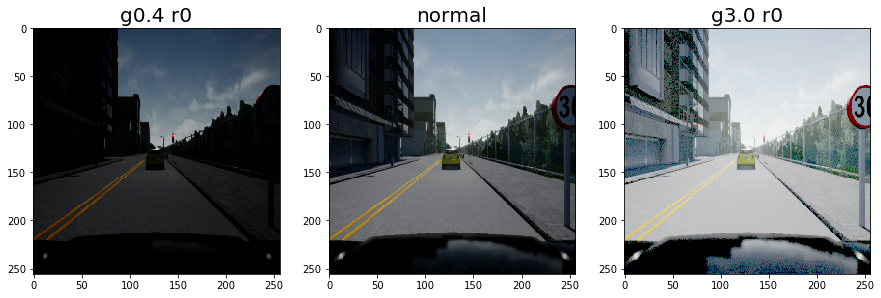
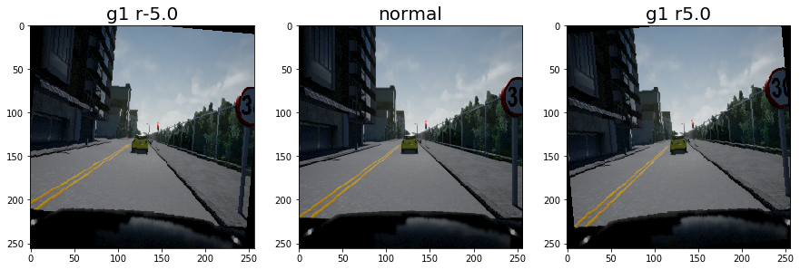
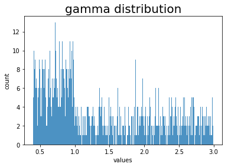
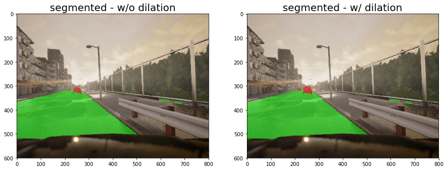
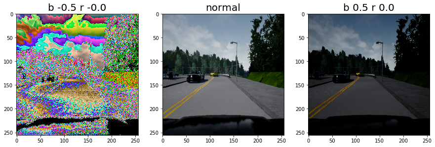

I participated in a competition organized by Lyft and Udacity in May 2018. Our task was to build a system to extract cars and road from videos recorded from CARLA simulator.

Left image is a screenshot from the dashcam, and the right image is the ground truth segmentation. We were to take only the cars (blue labeled pixels, except for the dashboard) and roads.
Participation in this challenge is open to all students in the Self-Driving Car Nanodegree Program. The top 150 competitors (globally) will be eligible for an intensive career preparation seminar with the Udacity Careers Team and the top 25 (with U.S. work authorization) will be eligible for an interview with Lyft.
I was lucky enough to get into rank 22nd but boy the competition was intense from then on.

I used a semantic segmentation algorithm with deep learning system which achieved a car F-score of 0.8321 and road F-score of 0.9856 with FPS of 11.363. To build this algorithm, I used MobileUNet network with 22300 training data, augmented by horizontal flipping, color intensity adjustments, and image rotations.
The result can be seen in this video.
1. Model Architecture¶
The base code of the model was shamelessly taken from this Github repositroy.
MobileUNet [1] is a variation of MobileNet [2] and UNet [3]. This specific architecture was chosen due to its higher inference speed compared to most semantic segmentation models.
My implementation uses the following structure:
| Layer | Description |
|---|---|
| Input | 256x256x3 RGB image |
| Downsampling path | |
| Block 1 | Skip connection - add to Block 8 |
| ConvBlock | Number of filters set to 64 |
| DSConvBlock | Number of filters set to 64 |
| Max Pooling | stride = [2, 2], pool size = [2, 2], padding = VALID |
| Block 2 | Skip connection - add to Block 7 |
| ConvBlock | Number of filters set to 128 |
| DSConvBlock | Number of filters set to 128 |
| Max Pooling | stride = [2, 2], pool size = [2, 2], padding = VALID |
| Block 3 | Skip connection - add to Block 6 |
| ConvBlock | Number of filters set to 256 |
| DSConvBlock | Number of filters set to 256 |
| Max Pooling | stride = [2, 2], pool size = [2, 2], padding = VALID |
| Block 4 | Skip connection - add to Block 5 |
| ConvBlock | Number of filters set to 512 |
| DSConvBlock | Number of filters set to 512 |
| Max Pooling | stride = [2, 2], pool size = [2, 2], padding = VALID |
| Upsampling path | |
| Block 5 | Skip connection - add by Block 4 |
| ConvTransposeBlock | Number of filters set to 512 |
| DSConvBlock | Number of filters set to 512 |
| DSConvBlock | Number of filters set to 512 |
| DSConvBlock | Number of filters set to 512 |
| Add by Block 4 | Arithmetic add |
| Block 6 | Skip connection - add by Block 3 |
| ConvTransposeBlock | Number of filters set to 512 |
| DSConvBlock | Number of filters set to 512 |
| DSConvBlock | Number of filters set to 512 |
| DSConvBlock | Number of filters set to 256 |
| Add by Block 4 | Arithmetic add |
| Block 7 | Skip connection - add by Block 2 |
| ConvTransposeBlock | Number of filters set to 256 |
| DSConvBlock | Number of filters set to 128 |
| DSConvBlock | Number of filters set to 128 |
| DSConvBlock | Number of filters set to 128 |
| Add by Block 4 | Arithmetic add |
| Block 8 | Skip connection - add by Block 1 |
| ConvTransposeBlock | Number of filters set to 128 |
| DSConvBlock | Number of filters set to 128 |
| DSConvBlock | Number of filters set to 64 |
| Add by Block 4 | Arithmetic add |
| ConvTransposeBlock | Number of filters set to 64 |
| DSConvBlock | Number of filters set to 64 |
| DSConvBlock | Number of filters set to 64 |
| Softmax | |
| Convolution | filters = 3 (num. of classes), kernel = [1, 1], padding = SAME |
Total number of classes is 3, for Background, Road, and Car.
Each ConvBlock is an operation with the following architecture:
| Layer | Description |
|---|---|
| Convolution | variable filters, kernel = [1, 1], padding = SAME |
| Fused Batch Normalization | |
| ReLu Activation |
All Batch Normalizations in the architecture are fused to improve their speed.
DSConvBlock is short for Depthwise Separable Convolutional Block. Depthwise separable convolutions are used for mobile devices because of their efficient use of parameters. It has the following architecture:
| Layer | Description |
|---|---|
| Separable Convolution | kernel = [3, 3] depth multiplier = 1, padding = SAME |
| Fused Batch Normalization | |
| ReLu Activation | |
| Convolution | variable filters, kernel = [1, 1], padding = SAME |
| Fused Batch Normalization | |
| ReLu Activation |
ConvTransposeBlock is the upsampling operation to decode the activations.
| Layer | Description |
|---|---|
| Transpose Convolution | variable filters, kernel = [3, 3] stride = [2, 2], padding = SAME |
| Batch Normalization | |
| ReLu Activation |
2. Training Data¶
In this section, I will describe some preprocessing steps that were done in this project. All data were gathered by recording images from CARLA simulation on 800 x 600 pixels resolution. In addition to 1000 images provided by Lyft, I recorded 72 more runs, each contains 274 screenshots. Total images is then 1000 + (72 * 274) = 20728 images.
2.1. Initial preprocessing¶
These images are resized into 256 x 256 pixels to accommodate the model's input. Segmentation data are processed to only take the road and cars, convert everything else to background (including our car's hood), and reindex the segmentation (0 for background, 1 for road, and 2 for cars). Below are some examples of the training data:
  
2.2. Data Augmentation¶
I augmented the data by running three operations at random to the training data:
- Horizontal flip
- Brightness with gamma between 0.4 to 3.0
- Rotation between -5.0 to +5.0 degrees
Here are the images on both extremes:
 
Brightness randomization is not straightforward since there is a different range between 0.4 to 1.0 (dimmer) and 1.0 to 3.0 (lighter). I initially randomized (with 50% probability) of either dimmer or lighter, then took a value from a uniform distribution from either range. The following graph illustrates the result distribution from 1000 random picks:

3. Training Configurations¶
The training was set up to run for 54 epochs with the batch size of 1. Loss function used was Cross-Entropy.
4. Post Processing¶
There are two main post processing steps that were done:
- Since the grader gives more importance to Recall of car segmentation, I dilated the result with a 3x3 kernel.
- Resize the image to the original size of 800 x 600 pixels.
Here are some example results before and after dilation. Note that these results were taken by running inference on unseen data:

5. Speed Optimizations¶
Some optimizations were made to increase the inference speed:
- I used OpenCV (cv2-python) module to encode images instead of PIL (idea by Phu Nguyen (phmagic)).
- OpenCV was used to read data from video too using
cv2.VideoCapturefunction. - Freeze the model and use the frozen model for inference.
Prior to these optimizations, the inference performance was around 6.3, then increased to around 9.5 after I have done the first and second adjustments, and finally improved to 11.4 after the last adjustment.
6. Bloopers and Experiments¶
The date-like numbers below e.g.
2018-05-28-0047are model identifiers.
6.1. Incorrect brightness setting¶
My initial brightness setting was incorrect. I initially trained with -0.5 to +0.5 brightness which resulted in broken-looking images for negative values:

6.2. Do we really need randomly rotated data?¶
I compared models with 10 epochs of augmented data without rotation (2018-05-28-0047) vs with rotation (2018-05-29-0801).
Without rotation:
2018-05-28-0047
Car F score: 0.741 | Car Precision: 0.768 | Car Recall: 0.735 | Road F score: 0.974 |
Road Precision: 0.974 | Road Recall: 0.975 | Averaged F score: 0.858With rotation (5 degrees max):
2018-05-29-0801
Car F score: 0.786 | Car Precision: 0.730 | Car Recall: 0.802 | Road F score: 0.970 |
Road Precision: 0.967 | Road Recall: 0.979 | Averaged F score: 0.878Looks like we do need rotation augmentation, but only for cars.
6.3. Gray, HSV, or RGB?¶
I tested three different color channels with the following results. All of them did 5 epochs of similar training data with a batch size of 4, then ran on the same test data:
Gray
11.111 FPS
Car F score: 0.696 | Car Precision: 0.794 | Car Recall: 0.675 | Road F score: 0.972 |
Road Precision: 0.970 | Road Recall: 0.977 | Averaged F score: 0.834HSV
10.989 FPS
Car F score: 0.734 | Car Precision: 0.494 | Car Recall: 0.834 | Road F score: 0.960 |
Road Precision: 0.957 | Road Recall: 0.972 | Averaged F score: 0.847RGB
10.989 FPS
Car F score: 0.750 | Car Precision: 0.666 | Car Recall: 0.775 | Road F score: 0.965 |
Road Precision: 0.961 | Road Recall: 0.981 | Averaged F score: 0.858Gray channel had the fastest inference rate, HSV had the highest car recall, and RGB had the highest F-score overall. From this experiment, I decided to go with RGB.
6.4. Larger image inputs?¶
I read from the discussion forum that some people claimed larger inputs would improve the model performance, so I tried it. Here is a result with 2 epochs batch size of 1 training with 512x512 pixels:
3.333 FPS
Car F score: 0.755 | Car Precision: 0.639 | Car Recall: 0.790 | Road F score: 0.970 |
Road Precision: 0.969 | Road Recall: 0.977 | Averaged F score: 0.862It was indeed better, both in terms of Car and Road F-scores. However, the FPS was too low to compete, so I decided to go with 256x256 pixels. It might be useful for future research to find a way to run inference with higher input size faster.
6.5. My very first submission¶
My very first submission in this challenge was using FC DenseNet 56 Tiramisu with only 1000 images. I did not do any speed improvement mentioned above. I included here for comparison purposes:
2018-05-17-2057
FC DenseNet 56
300 epochs
1.111 FPS
Car F score: 0.686 | Car Precision: 0.712 | Car Recall: 0.680 | Road F score: 0.977 |
Road Precision: 0.977 | Road Recall: 0.979 | Averaged F score: 0.832Look at how slow the model was, although its performance was not too bad for a model trained on such a small number of data points. This could potentially be a better model than my final submission.
References¶
- [Akira Sosa, MobileUNet code (https://github.com/akirasosa/mobile-semantic-segmentation).](https://github.com/akirasosa/mobile-semantic-segmentation)
- [Andrew G. Howard, Menglong Zhu, Bo Chen, Dmitry Kalenichenko, Weijun Wang, Tobias Weyand, Marco Andreetto, Hartwig Adam, MobileNets: Efficient Convolutional Neural Networks for Mobile Vision Applications, April 2017.](https://arxiv.org/abs/1704.04861)
- [Olaf Ronneberger, Philipp Fischer, Thomas Brox, Medical Image Computing and Computer-Assisted Intervention (MICCAI), Springer, LNCS, Vol.9351: 234--241, 2015.](https://lmb.informatik.uni-freiburg.de/Publications/2015/RFB15a/)